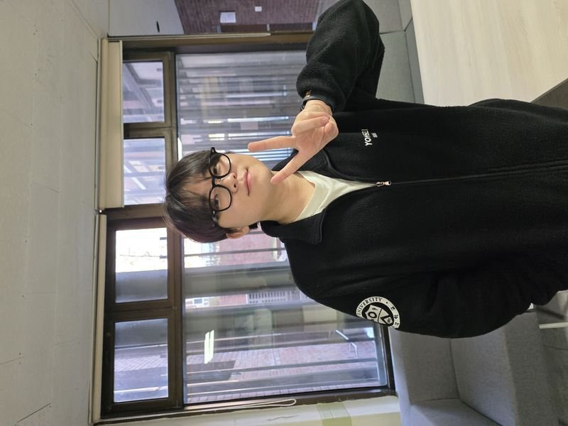
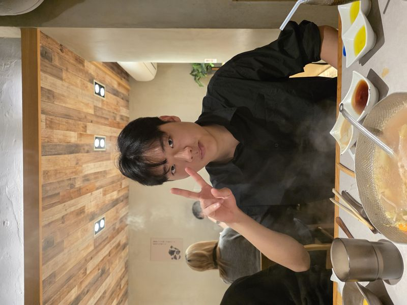
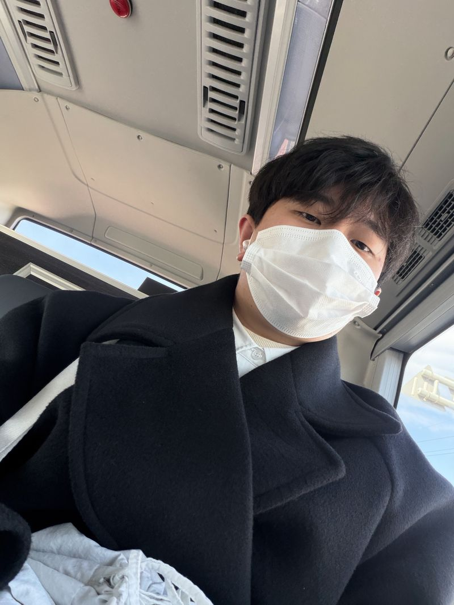
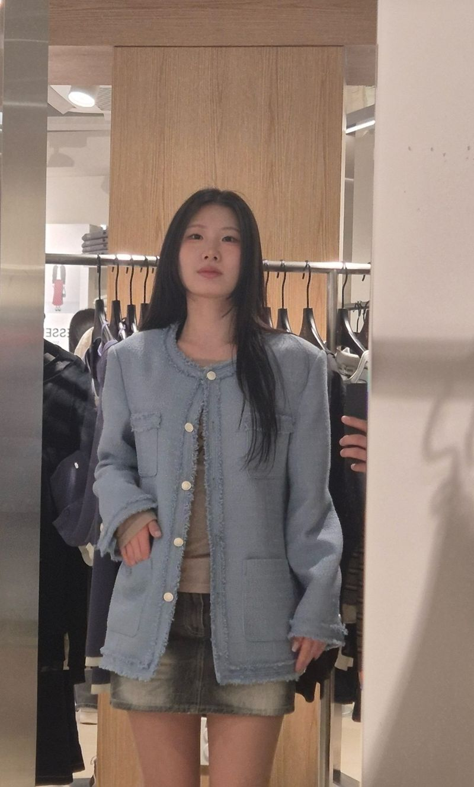
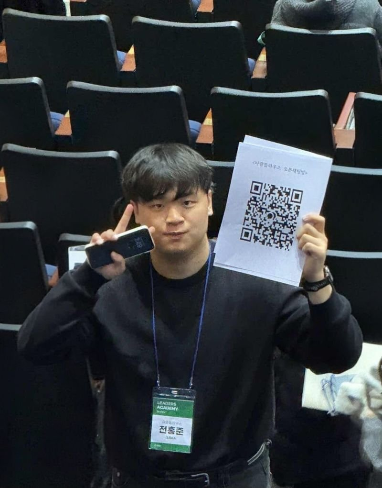
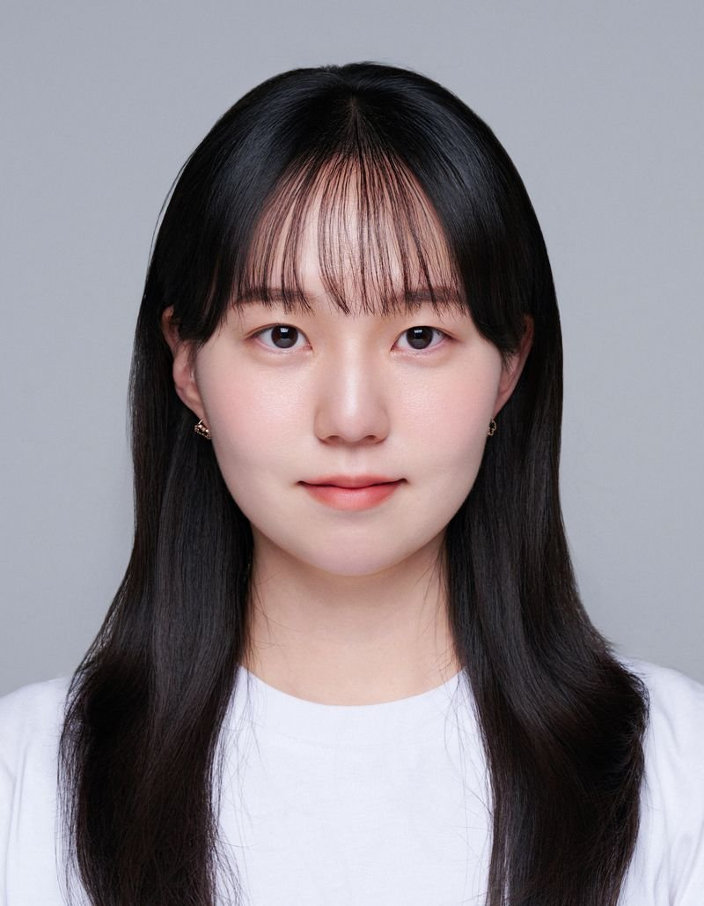
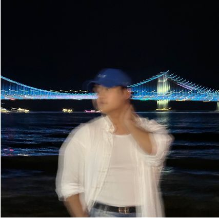
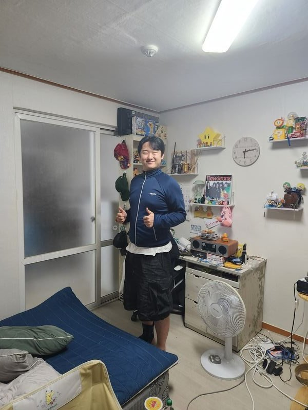

Pupil
Yonsei University — My mentees across various courses and programs.
AI Mathematics

Guided her through the mathematical foundations of AI — linear algebra, optimization theory, and probability — with a focus on bridging these concepts to her FPGA interest. Helped her understand how mathematical operations in neural networks map onto hardware-level implementations, laying the groundwork for AI accelerator design on FPGA.

Mentored him on AI mathematics fundamentals while also guiding his transition from a business-oriented mindset to hands-on AI research. As CTO of Permillion, he wanted to understand the mathematical theory behind AI models his team was building. I helped him grasp optimization, loss functions, and gradient-based learning, and supported his involvement in TDA-based medical data analysis and cache-inspired federated learning research.

A returning mentee across two semesters — Engineering Mathematics and AI Mathematics. Helped him build strong mathematical intuition starting from differential equations and linear algebra, then extending to AI-specific topics like backpropagation and optimization. His web development background allowed me to relate abstract math concepts to practical implementations, connecting theory to real-world full-stack AI applications.
LG AImers

Guided her through the LG Aimers 8th program, focusing on EXAONE model lightweight LLM compression. Helped her connect her signal processing background to deep learning model optimization — particularly quantization and pruning techniques. Provided hands-on mentoring on building end-to-end ML pipelines from data preprocessing to model evaluation and compression.

One of my most active research mentees. During LG Aimers, I mentored him on LLM compression pipelines and team-based AI development. Beyond the program, he joined my research on adversarial robustness — together we co-authored papers on post-hoc defense in federated learning using knowledge distillation and multi-adversarial attacks on Vision Transformers. I guided him from NLP fundamentals to hands-on adversarial ML experimentation.
Artificial Intelligence
In the AI course, I deepened his understanding of core deep learning architectures, training pipelines, and adversarial robustness. He actively participated in research on federated learning defense and ViT adversarial analysis, contributing as a co-author on two published papers. I guided him through the full research cycle — from literature review and experiment design to paper writing and conference presentation.

Mentored him in the AI course with a focus on deep learning model architectures and comparative evaluation methodologies. He was eager to explore how different model designs affect performance on real-world signal data. Guided him through our seismic signal denoising research — teaching him to systematically benchmark 8 deep learning models under identical conditions and analyze results for a published paper.
Mentored her through the AI course, connecting her video compression expertise to deep learning signal processing. She contributed to our seismic signal denoising research, where I taught her how to apply time-series deep learning models and evaluate denoising quality metrics. Her background in video compression gave her a unique perspective on signal reconstruction that enriched our comparative analysis.
Engineering Mathematics

Minkyun Ko
Security
Guided him through engineering mathematics with an emphasis on the mathematical underpinnings of cryptography and security. Covered topics like modular arithmetic, number theory, and linear algebra — helping him see how these abstract concepts directly apply to encryption algorithms, key exchange protocols, and security system design.

Hyunseo Kim
Game Development
Helped him build mathematical foundations for game development — focusing on linear algebra (transformations, matrices, quaternions), calculus (physics simulations, motion curves), and differential equations. Connected engineering math concepts to practical game engine applications like 3D rendering, collision detection, and real-time physics, making the abstract theory tangible for his game development goals.
In Engineering Mathematics, I focused on foundational topics like ODEs, Fourier transforms, and Laplace transforms — relating them to signal processing and system modeling concepts that complement his web development work. His consistent attendance across two courses showed strong commitment to building a solid mathematical base for future full-stack and AI-integrated web applications.